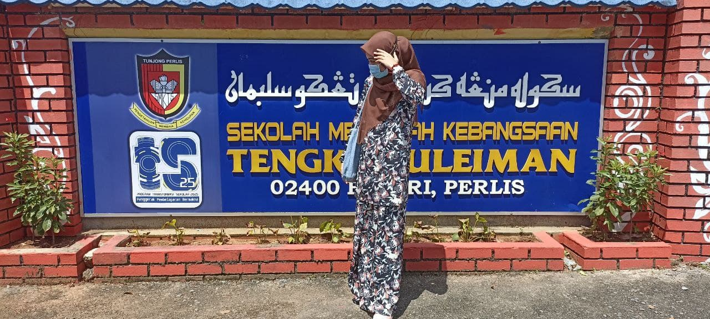

Introduce Myself
|
Hello, my name is Nur Fatin Athirah bt Rodzi and I am 20 years old. I live with my family in my hometown, Kampung Darat, Beseri, Perlis I was born on 22 June 2001 at Tuanku Fauziah’s Hospital. In addition, I have three siblings and I am the youngest in the family. My father is Rodzi bin Yob, he works as a clerk while my mother is Hasnah bt Adam and she is a housewife.I have started schooling in “Sekolah Kebangsaan Seri Tunjong” and got pretty good results in UPSR.
| |

Other than that, I am also a former student from “Sekolah Menengah Kebangsaan Tengku Suleiman". Thanks to my
teacher I also got excellent results in PT3 and SPM during secondary school.So, now I am a diploma student
in Information management at UiTM Kedah. Last but not least, I am also a person who is easily approached by
friends.If my friends have a problem, they often share to get an advice from me. Lastly, I will work hardly
until I achieve my ambitions so that the sacrifices of my parents are not in vain and I will make my parents
proud with me.

|
| Go to next page |